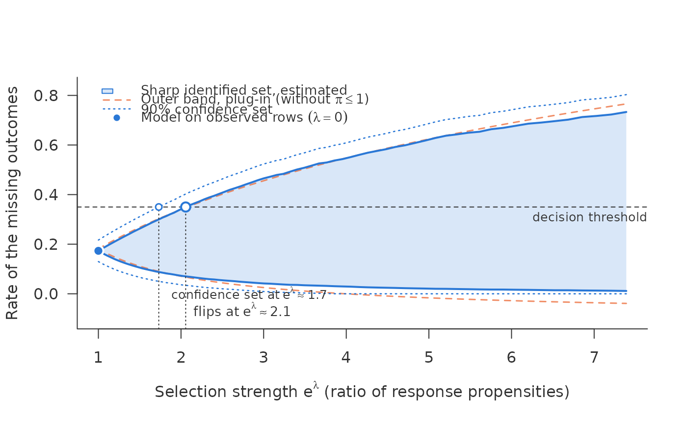

sharp_scan_ci() estimates the sharp set of sharp_scan() with its
sampling error and returns, at each \(\lambda\), a confidence set that
covers the identified set. It follows Semenova (2025): each endpoint is a
mean over rows of the minimum (or maximum) of two pieces, the band and the
worst-case bound; the piece that binds in a row is chosen from nuisance
estimates fitted without that row, and what is averaged is an orthogonal
signal of the chosen piece, not its plug-in value. This removes the bias of
the plug-in, which takes in every row the smaller of two noisy pieces and
so lies inside the set, most of all where many rows are near the switch
between band and bound. The confidence set uses the normal approximation
that Semenova's theory gives. That theory needs a margin condition: few
rows may sit close to the switch between band and bound, where the binding
piece changes (for the upper end, where \(r(1 + \kappa\eta_{\mathrm{obs}})
= 1\) with \(\kappa = e^\lambda - 1\)). Unlike the mean scan, whose score
is orthogonal in both regimes, the rate scan relies on it; with many rows
near the switch the normal approximation can be poor.
Arguments
- eta_obs
Cross-fitted \(\hat\eta_{\mathrm{obs}}(x_i)\) for every row, in (0, 1).
- r
Cross-fitted \(\hat r(x_i)\) for every row, in (0, 1].
- response
Response indicator for every row, 0/1 or logical.
- outcome
Outcome, 0/1; ignored (and may be
NA) whereresponseis 0.- target
"all"(default, as insharp_scan_mean_ci()),"unobserved"(the rate of the missing outcomes, \(E(Y \mid R = 0)\), such as the default rate of rejected applications; see the section on inputs), or a logical vector selecting the rows of the portfolio by \(X\).- lambda, threshold
As in
sharp_scan().- weights
Optional non-negative row weights, a function of \(X\).
- level
Confidence level. Default 0.9.
- trim
Rows with \(\hat r <\)
trimleave the target. Default 0. See the section on what is covered.- se_type
"max"(default),"conditional"or"empirical"; see the section on what is covered.- segment
Optional logical vector chosen by \(X\), one per row, that restricts a target of
"unobserved"(or"all") to one segment, such as the rejected applications of one region: \(E(Y \mid R = 0)\) within the segment.
Value
An object of class c("sharp_scan_ci", "sharp_scan"), as from
sharp_scan(), whose curve holds the debiased estimates lower,
upper, their standard errors se_lower, se_upper, the confidence set
ci_lower, ci_upper, and the plug-in outer band of the target rows.
flip adds ci: the smallest \(\lambda\) at which the confidence set
reaches the threshold, the point from which the data no longer rule out
the other decision. capped and held say where the cap
\(\pi \le 1\) binds among the target rows, as in sharp_scan(),
computed from the nuisance estimates.
The estimates and the confidence set are kept monotone in \(\lambda\)
(running minimum of the lower ends, running maximum of the upper ends):
the identified set grows with \(\lambda\), its debiased estimates need
not, by sampling error, and a set valid at one \(\lambda\) is valid at
every larger one.
Inputs
Unlike sharp_scan(), the inputs are given for all rows, observed and
unobserved, together with the response indicator and the outcome:
the signals use \(RY\) and \(R(Y - \hat\eta_{\mathrm{obs}})/\hat r\).
eta_obs and r must be cross-fitted: the prediction for a row comes
from models fitted without it. crossfit_inputs() does that for any
learner. In-sample predictions make the confidence set too narrow.
target says which rate is wanted. "all" and a logical vector of rows
chosen by \(X\) alone (a segment) give the mean of
\(\eta(x) = P(Y = 1 \mid X = x)\) over those rows. "unobserved" gives
the rate of the missing outcomes themselves, \(E(Y \mid R = 0)\), such
as the default rate of the rejected applications: by Bayes' rule
\(E(Y \mid R = 0) = \{E(Y) - E(RY)\}/\mathrm{pr}(R = 0)\), so its sharp set
is \([\theta^-, \theta^+]\) with \(\theta^\pm = \{\psi^\pm -
E(RY)\}/\mathrm{pr}(R = 0)\) and \(\psi^\pm\) the endpoints for all rows
(Bücker 2026, corollary on the mean of the nonrespondents). Its estimator replaces the two
expectations by sample means; its influence function is
\(\{\varphi^\pm - RY - \theta^\pm(1 - R)\}/\mathrm{pr}(R = 0)\), with
\(\varphi^\pm\) the score for all rows. This is not the mean of
\(\eta(x)\) over the unobserved rows: under selection on the outcome the
unobserved rows at a given \(x\) differ from all rows at that \(x\).
With segment, the same holds within a segment chosen by \(X\).
What is covered
At each \(\lambda\) separately, the interval
\([\hat\psi^- - z\,\widehat{se}^-,\ \hat\psi^+ + z\,\widehat{se}^+]\) with
\(z\) the \(1 - (1 - \mathrm{level})/2\) normal quantile covers the
identified set \([\psi^-, \psi^+]\) with probability at least level
asymptotically. It is a confidence set for the set, not for the parameter
inside it, and it holds pointwise in \(\lambda\), not uniformly over the
curve. The theory requires that rows where band and bound are exactly
equal carry no probability mass, which holds when \(X\) has a continuous
component, and overlap: \(r(x)\) bounded away from zero.
Overlap is the binding condition in practice. The correction term weights
each observed row by \(1/\hat r\), so a few observed rows in regions
where almost nothing is observed can carry most of the variance of the
score. The usual standard error, the sample standard deviation of the
influence values (se_type = "empirical"), then depends on whether the
sample happens to contain such rows, and it is too small on average.
se_type = "conditional" computes the variance of the influence value
given \(X\) in closed form from the nuisances, for instance
\(f'(\hat\eta)^2 \hat\eta(1-\hat\eta)/\hat r\) for the band piece of
the target "all", and averages it over all rows, including the many
unobserved ones in the same regions.
For the rate of the missing outcomes (target = "unobserved"), in the
package's simulation (simulate_shadow(tilt = -1), logistic learners, five
folds, 400 samples each of 1,000, 4,000 and 16,000 rows, \(\lambda\) from
0 to 2, level = 0.9), the empirical standard error covered 0.86 to 0.90
and approached the spread of the estimates only slowly (for the lower end
at \(\lambda = 0.5\), 38% too small at 1,000 rows, 14% at 16,000); the
conditional one, computed from the same influence function, matched that
spread to within 7% from 4,000 rows on and covered 0.89 to 0.97; the
default, the larger of the two, 0.92 to 0.98.
The conditional variance takes \(\hat\eta_{\mathrm{obs}}(1 -
\hat\eta_{\mathrm{obs}})\) for the variance of \(Y\); if the outcome
model is misspecified, the squared error \((\eta_{\mathrm{obs}} -
\hat\eta_{\mathrm{obs}})^2\) is missing from it, and only the empirical
variance sees it. Each of the two guards against the failure of the other,
so the default, se_type = "max", takes the larger at each endpoint and
\(\lambda\). On Lending Club data, for the rejected applications, the
empirical one was the larger, by 40% to 60%; in the simulations, with a
correctly specified outcome model, the conditional one.
Both standard errors depend on how much mass the response model puts where \(\hat r\) is small: a smoother fit of \(r\) can raise the conditional one markedly while the empirical one barely moves. The output therefore reports the rows with \(\hat r < 0.01\) next to the estimate, and the width of the confidence set should be read together with that count. A debiased estimate far outside \([0, 1]\) means the inverse weights have blown up, typically through separation in the response model; a warning says so.
trim removes rows with \(\hat r <\) trim from the target, together
with their correction terms. That changes the target to the rows with
\(\hat r \ge\) trim, and the output says how many rows left it. Rows
with \(\hat r\) at zero, where the selection was deterministic, have to
leave the target in any case, as for sharp_scan().
For the whole sample (target = "all"), where the weight does not depend
on \(r\), both standard errors covered 0.88 to 0.92 from 1,000 rows on.
Percentile bootstrap intervals of the plug-in covered as little as 0.72 at
\(\lambda = 2\).
Only the union aggregation is covered: the common-tilt set is bounded by an
extreme over rows, for which this theory does not hold. For a non-binary
outcome, see sharp_scan_mean_ci().
References
Bücker, M. (2026). Sharp intervals for a mean under bounded selection ratios when the response rate is known. Manuscript.
Semenova, V. (2025). Debiased machine learning of aggregated intersection bounds and other causal parameters. Working paper, SSRN 5134514. doi:10.2139/ssrn.5134514
Examples
d <- simulate_shadow(3000, tilt = -1, seed = 3)
f <- ~ x1 + x2 + z_shadow + z_policy + z_score
inp <- crossfit_inputs(d, "observed",
fit_eta = function(train, new) predict(glm(update(f, y ~ .), binomial, train),
new, type = "response"),
fit_r = function(train, new) predict(glm(update(f, observed ~ .), binomial, train),
new, type = "response"),
seed = 1)
# the rejected applications: the rows whose outcome is missing
s <- sharp_scan_ci(inp$eta_obs, inp$r, d$observed, d$y, target = "unobserved",
threshold = 0.35)
s
#> <sharp_scan_ci> sharp set for a rate, debiased, with 90% confidence set
#> rows: 3000 target: unobserved (1348 rows)
#> r-hat < 0.01: 3 target rows, 0 observed rows; smallest r-hat observed 0.047
#> lambda = 0: 0.173 [0.13, 0.217]
#> lambda = 2 (propensity ratio 7.39): set [0.0114, 0.733], confidence set [0, 0.803]
#> threshold 0.35 reached by
#> estimated set: lambda = 0.721 (propensity ratio 2.06)
#> confidence set: lambda = 0.549 (propensity ratio 1.73)
#> outer band (plug-in): lambda = 0.731 (propensity ratio 2.08)
#> cap pi <= 1 at lambda = 2 binds in 86% of the rows entering the set
#> for the lower bound, 29% for the upper
plot(s)
